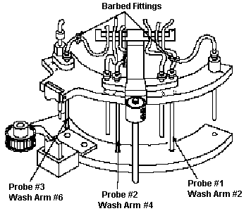
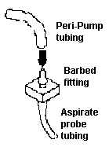
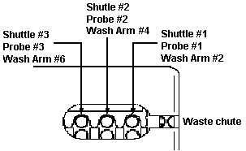

Installing Aspirate Probes
-
Install the aspirate probe.

- Push down and turn counter-clockwise to unlock, and then pull upward to remove the aspirate probe.
- Insert the new probe.
- Push down and turn clockwise to lock the aspirate probe into position.
-
Connect the peri-pump tubing to the barbed fitting on the probe tubing.

- Confirm that each aspirate probe springs back freely when pulled upward slightly.
-
Adjust the wash arm height.
- Home the wash arm, and then select Move to Position.
- Use the up and down arrow keys to set the aspirate probes 0.010 in above the wash-read carousel housing, and then select Save Offset to save the alignment.
-
Verify operation of the aspirate probes.
- Perform an aspirate probe volume check. For Access 2, select Diagnostics > Volume Checks > Aspirate Probes.
- Observe the wash arm during the volume check. Confirm that the aspirate probe tubing is routed so that tubing does not catch on anything as the wash arm moves up and down.
-
Inspect for fluid remaining in each RV. Confirm that no more than a small droplet of fluid (4 µL if running Wash Buffer II, 5 µL if running original wash buffer with software V2.5 for Access 2) is left in the bottom of the vessel.

- If there is a significant amount of fluid (4 µL if running Wash Buffer II, 5µL if running original wash buffer with software V2.5 for Access 2) remaining in a vessel, then replace or clean the corresponding aspirate probe or aspirate tubing.
-
Verify system operation.
-
Perform the required system verification.
Note: Refer to the Verification of Preventive Maintenance document.
- Contact your local support organization with any questions or concerns.
-
Perform the required system verification.